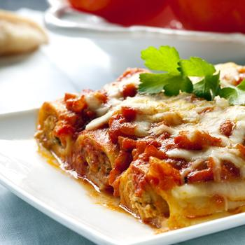

Канелоні з м'ясом під соусом бешамель
Напевно ви неодноразово бачили на полицях магазину серед різних макаронних виробів великі роли з тіста. Це канелоні. Для любителів м’ясних страв це чудова альтернатива домашнім пельменям чи італійській лазаньї з м’ясним фаршем – готується швидше, а на смак не гірше!
Інгредієнти:
Яловичий фарш — 400 гр
Канелоні — 150 гр
Цибуля — 1 шт
Олія соняшникова рафінована — 2 ст.л.
Перець чорний мелений — 2 щепотки
Сік томатний — 200 гр
Суміш італійських трав — 2 ч.л.
Сіль — за смаком
Часник — 3 зубчика
Сир Пармезан — 100 гр
Масло вершкове — 50 гр
Борошно пшеничне — 3 ст.л.
Молоко — 1000 мл
Мускатний горіх мелений — 1 ч.л.
Етапи приготування:
- Спершу готуємо начинку:
- Мілко нарізати цибулю та часник.
- Натерти моркву на терці.
- Трішки підсмажити цибулю, часник та моркву на пательні.
- Додати м’ясний фарш і обсмажувати 10хв, слідкуючи щоб не було згустків. Посолити та поперчити за смаком. Додати томатну пасту або томатний соус. Тушити 3-5хв.
- арш остудити.
- За цей час, можна приготувати соус:
- В невеличкій каструлі розтопити вершкове масло.
- В масло додати муку та обсмажувати близько 2 хвилин. Мука повинна стати приємного горіхового відтінку.
- Влити, безперервно помішуючи, холодне молоко. Слідкуйте, щоб не було згустків. Не забудьте посолити.
- Довести все до кипіння та виключити газ. Соус готовий.
- На дно форми для запікання вилити частину соусу.
- Канелоні заповнити фаршем і покласти в форму для запікання.
- Вилити соус, що залишився і посипати натертим сиром.Важливо! Соус повинен повністю покривати макарони. Якщо його мало, можна додати молоко або бульйон.
- Запікати канелоні з фаршем потрібно в попередньо розігрітій до 180 градусів духовій печі близько 30хв.
- Коли верх стане румяним, витягнути канелоні з духовки.
- Смачного!